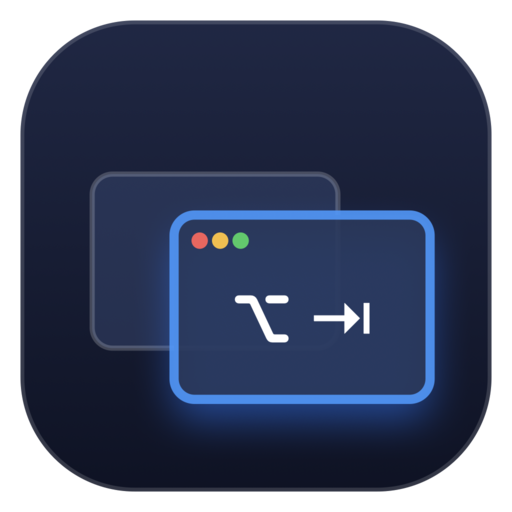

AltSwitch
Alt-Tab wie unter Windows – für deinen Mac. Wechsle Fenster, nicht nur Programme.
AltSwitch zeigt jedes offene Fenster aller Programme als Karte mit Live-Vorschau. ⌥ oder ⌘ halten, Tab tippen, loslassen – und das gewählte Fenster ist vorn.
Warum AltSwitch?
Das eingebaute ⌘Tab wechselt zwischen Programmen. Mit drei Browserfenstern, zwei Dokumenten und einem Terminal landest du trotzdem in Mission Control. AltSwitch listet jedes Fenster einzeln, das zuletzt benutzte zuerst – wie Alt-Tab unter Windows.
| Funktion | macOS ⌘-Tab | AltSwitch |
|---|---|---|
| Zu einem bestimmten Fenster wechseln, nicht nur zur App | nein | ja |
| Live-Vorschau jedes Fensters | nein | ja |
| Raster mit allen Fenstern (wie die Task View) | nein | ja |
| Minimierte Fenster in der Liste | nein | ja |
| Zuletzt benutzt zuerst, Tastatur und Maus | ja | ja |
| Eingebaut, nichts zu installieren | ja | nein |
⌘-Tab ist schnell und immer da – ideal, wenn du nur das Programm wechseln willst. AltSwitch ist für den Moment, in dem du ein bestimmtes Fenster suchst.
Jedes Fenster, einen Tastendruck entfernt
Eine kleine, native Menüleisten-App, die eine Sache gut macht.
Fenster für Fenster
Jedes offene Fenster aller Programme ist eine eigene Karte, sortiert nach letzter Nutzung. Das vorher benutzte Fenster ist beim ersten Tab ausgewählt.
Live-Vorschau
Jede Karte zeigt ein aktuelles Bild des Fensters – so erkennst du das richtige Dokument auf einen Blick.
Zwei Ansichten
Ein kompaktes Karussell für den schnellen Wechsel oder ein Raster mit allen Fenstern – wie die Task View – mit Pfeiltasten in alle vier Richtungen.
Dein Kurzbefehl
⌥Tab oder anstelle von ⌘Tab. Zurück mit ⇧Tab oder kurz ⇧ antippen, abbrechen mit Esc.
Ein Klick
Karte anklicken, und das Fenster ist vorn – der erste Klick zählt, kein Doppelklick.
Auch minimierte Fenster
Minimierte Fenster erscheinen mit einer Markierung und werden beim Auswählen wiederhergestellt.
Stört nicht
Lebt in der Menüleiste, ohne Dock-Symbol. Ein Assistent führt durch die Berechtigungen; Start beim Anmelden ist ein Klick.
Nativ und leicht
Geschrieben in Swift mit AppKit und SwiftUI. Kein Electron, keine Hintergrunddienste. Universal für Apple Silicon und Intel.
Privat
Keine Netzverbindungen, keine Telemetrie, kein Konto. Siehe Datenschutz.
Tastenkürzel
Gezeigt für ⌥; mit der Einstellung ⌘ gilt ⌘.
Installieren
- Die DMG von der Release-Seite laden.
- Öffnen und AltSwitch in Programme ziehen. Releases sind mit einer Developer ID signiert und von Apple notarisiert.
- AltSwitch starten. Der Assistent fragt nach Bedienungshilfen (nötig, um den Kurzbefehl abzufangen und Fenster nach vorn zu holen) und optional nach Bildschirmaufnahme (nur für die Vorschaubilder – ohne sie zeigen die Karten das App-Symbol).
Oder mit Homebrew: brew install --cask brokoskokoli/tap/altswitch
Voraussetzungen
macOS 13 Ventura oder neuer, Apple Silicon oder Intel.
Aus dem Quellcode bauen
git clone https://github.com/brokoskokoli/altswitch.git, dann baut ./build.sh die .build/AltSwitch.app. Details im README.
Häufige Fragen
Ist AltSwitch wirklich kostenlos?
Ja. Es ist Open Source unter der MIT-Lizenz, ohne Werbung, ohne Abo und ohne Konto.
Verbindet sich AltSwitch mit dem Internet?
Nein. Die App baut überhaupt keine Netzverbindungen auf. Details unter Datenschutz.
Wozu braucht die App Bedienungshilfen und Bildschirmaufnahme?
Mit den Bedienungshilfen fängt AltSwitch ⌥Tab oder ⌘Tab ab und holt ein bestimmtes Fenster nach vorn. Die Bildschirmaufnahme dient nur den Vorschaubildern deiner Fenster; sie verlassen deinen Mac nie. Ohne sie funktioniert AltSwitch trotzdem und zeigt App-Symbole.
Kann AltSwitch ⌘-Tab ersetzen?
Ja. Im Menüleisten-Menü Command + Tab wählen. Zurück auf ⌥Tab geht jederzeit.
Wie aktualisiere ich?
Mit Homebrew: brew upgrade --cask altswitch. Sonst die neue DMG von der Release-Seite laden und die App ersetzen.
Gibt es andere Fensterumschalter?
Ja, zum Beispiel das Open-Source-Projekt AltTab, das deutlich mehr Einstellungen bietet. AltSwitch will klein und einfach bleiben.
Wie kann ich helfen?
Fehler melden oder Ideen vorschlagen im Issue-Tracker; Pull Requests sind willkommen.